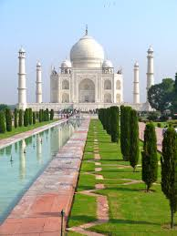

|  | El Taj Mahal es una de las maravillas del mundo. Además, es un importantísimo destino turístico de la India, recibiendo anualmente la
visita de entre 7 y 8 millones de visitantes. Esta maravilla del mundo fue encargada al arquitecto de la corte Ustad Ahmad Lahori.
La historia del Taj Mahal se remonta a 1631, año en el que empezó su construcción en Agra, La India, y se alargaría hasta 1654.
Considerado como palacio por muchos, el Taj Mahal fue en su origen un mausoleo construido por el emperador musulmán Shah Jahan en
honor a la que fue su tercera esposa, Mumtaz Mahal, después de que esta falleciera en el parto de su decimocuarto hijo. Por todos era
sabido que la joven era su esposa favorita, por lo que el emperador decidió honrarla con este monumental mausoleo.
- -Durante la construcción del Taj Mahal trabajaron 20.000 personas y más de 1.000 elefantes. Unas cifras desmesuradas para hacer realidad el sueño del emperador Sha Jahan en tan sólo 22 años.
- - Las leyendas cuentan que el emperador mandó cortar las manos de los arquitectos que habían participado una vez que se terminó la construcción del Taj Mahal, además de mandar dejarles ciegos.
Cuentan que esto lo hizo para que nunca pudieran replicar esta obra de arte en ningún otro lugar.
- - El Taj Mahal es una fusión de estilos. Podemos encontrar elementos de estilo persa, además del estilo islámico y del indio.
- - El emperador era un completo obseso de la simetría, por lo que tras su muerte, su tumba (al lado de la de su mujer) es lo único que rompe esta simetría en el Taj Mahal.
|
|
|
| |